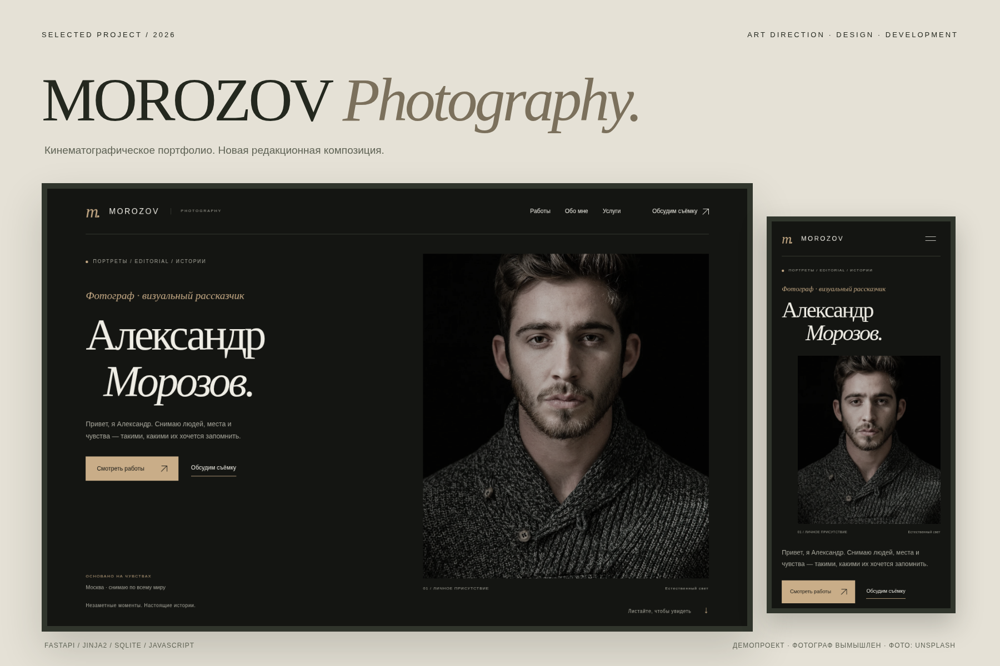
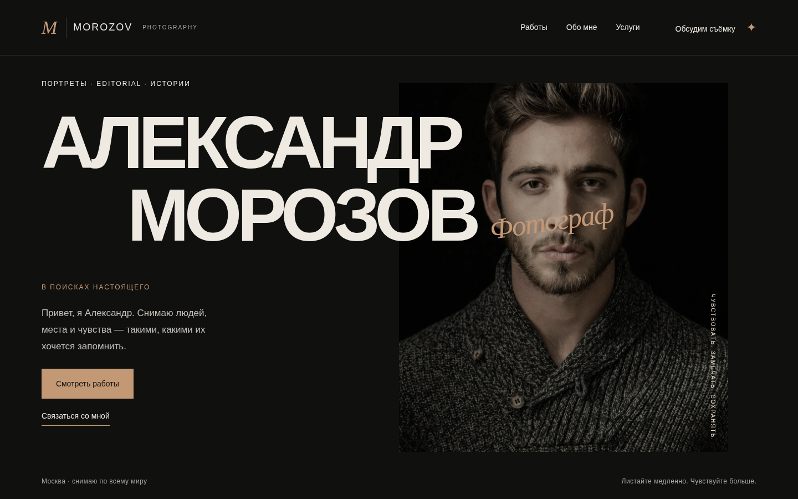
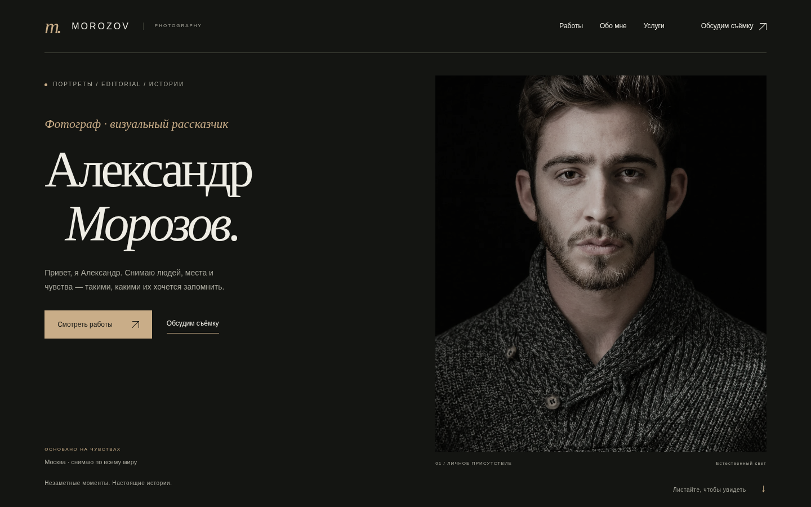
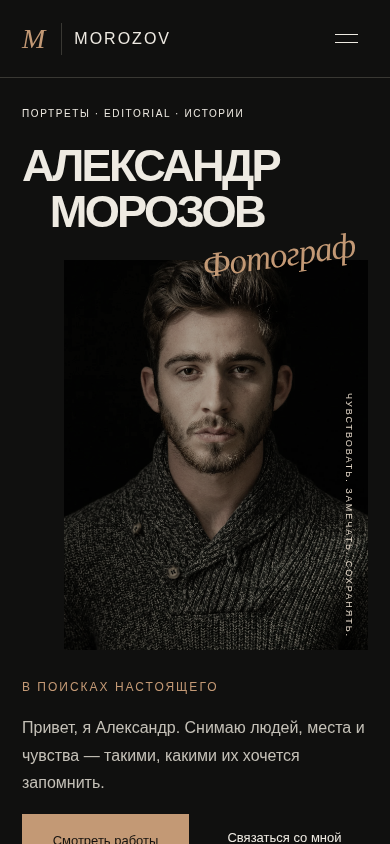
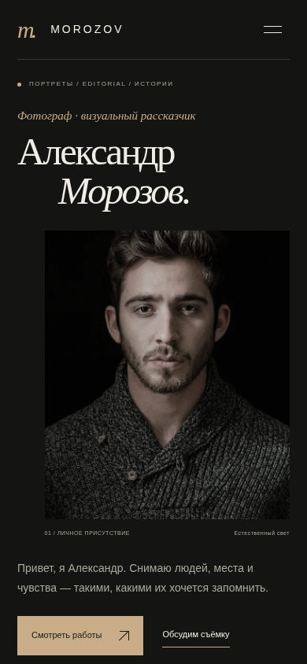
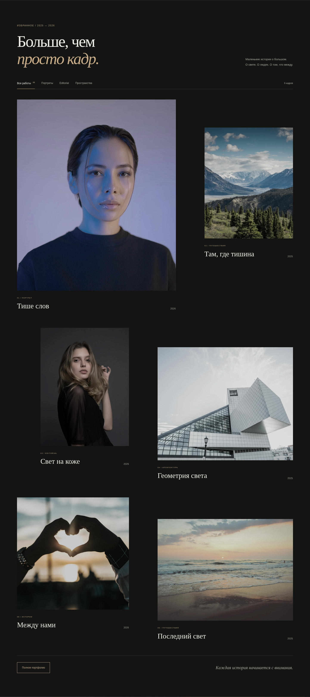
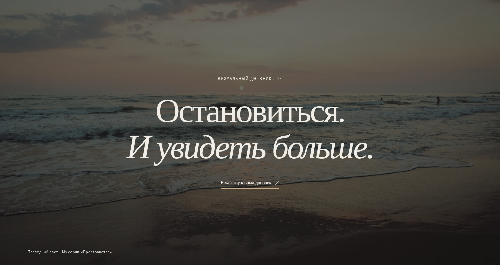
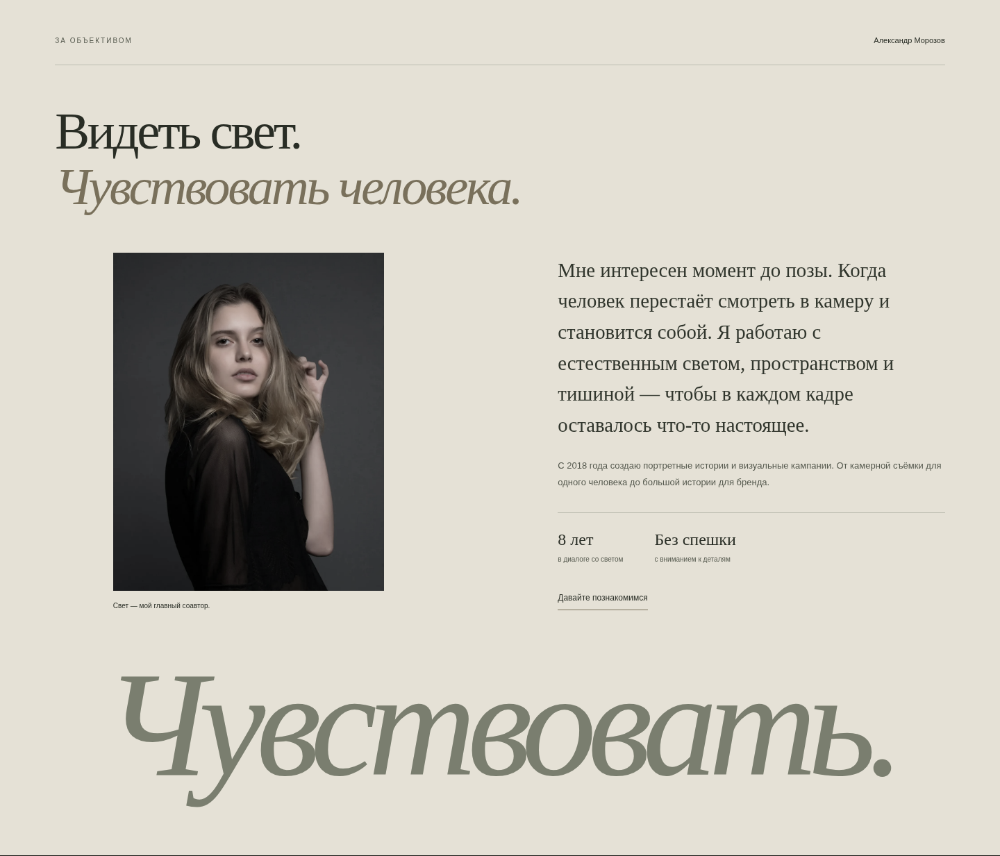
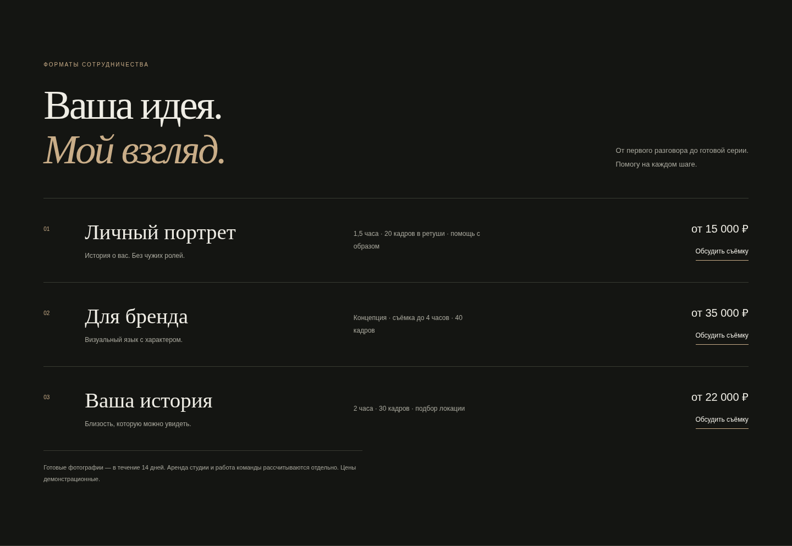
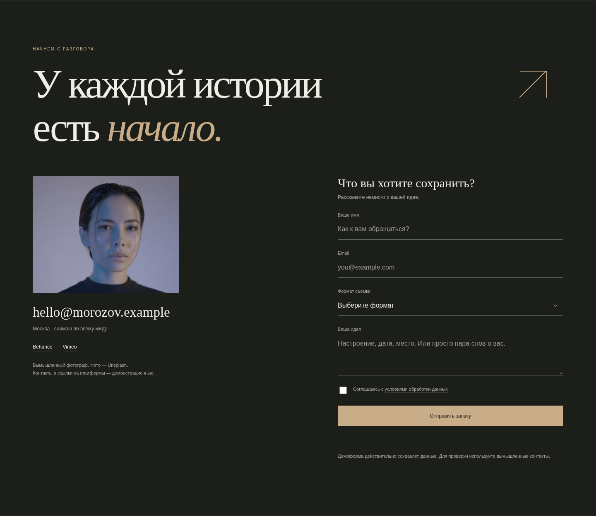

DESIGN / DEVELOPMENT / 2026
Кинематографическая фотография, редакционная композиция и спокойное движение. Модернизация существующего FastAPI-проекта. Ветка morozov-v2 — для предварительного просмотра, без публикации новой версии.

Лицо открыто. Имя, описание и действия занимают собственную колонку. Высота адаптируется к небольшим ноутбукам.




Разный масштаб кадров, интерактивные подписи, фильтры и полноэкранный просмотр.





Отчёт о проверках · Запуск на Windows · Список изменений
Демонстрационный проект. Фотограф вымышленный; фотографии принадлежат правообладателям, источники — в IMAGE_CREDITS.md. Скриншоты сняты с работающего локального приложения. Обложка составлена из этих снимков.